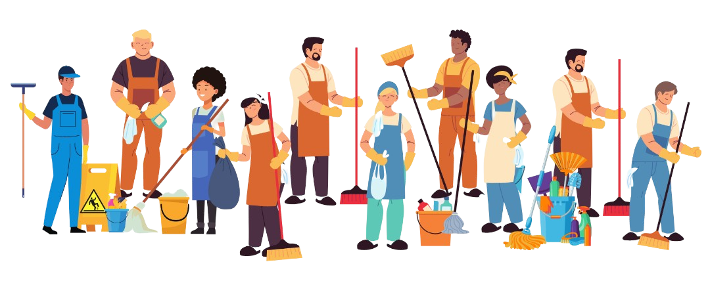

TANTANGAN DI ERA INDUSTRI 4.0
Masuknya era industri 4.0 tidak terlepas dari segala tuntutan bahwa segala aspek industri haruslah serba cepat, efisien, dan lebih berpusat kepada konsumen.
Hal ini tentu berdampak pada perubahan yang signifikan dalam sistem industri.
Para pimpinan harus memutar otak untuk dapat bertahan dan terus maju dalam era cyber physical system.
BAGAIMANA RESIC COMPANY DIMULAI
Pendiri kami, Utsman Arifin Al Fauzi, berusaha menjawab dan menghadapi tantangan ini.
Resic Company lahir untuk menjawab kebutuhan akan layanan kebersihan tanpa harus keluar rumah.
Hanya dengan terhubung ke jaringan internet, pelanggan dapat langsung memesan layanan kebersihan juga produk-produk kebersihan